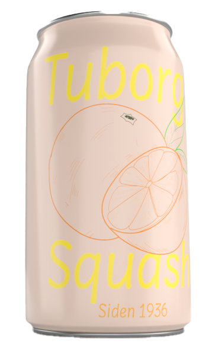
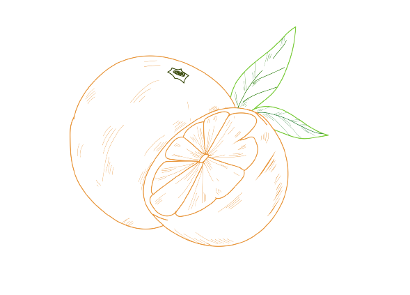

Tuborg Squash er et charmerende folkeeje,
på tværs af alle generationer, store som små.
Tuborg Squash er en ægte klassiker.
Smager som en god dansk appelsinvand.


VIND 6 X TUBORG SQUASH
Ny vinder hver måned.
Del dine minder med Tuborg Squash lige her.
Bedste minde vinder 6 x Tuborg Squash til at skabe endnu flere Squash minder.
Smagsvarianter
Tuborg Squash fåes i 2 forskellige varianter.
Klik nedenfor for at få et indblik i smagsvarianterne, samt indhold.